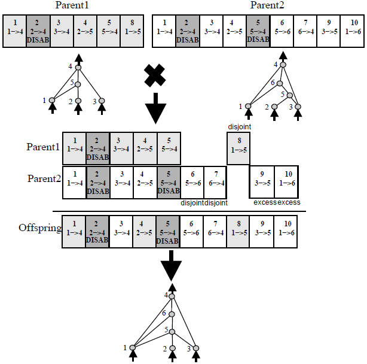

applying crossover and mutation to a graph (genetic algorithm)
I'm playing arround with a Genetic Algorithm in which I want to evolve graphs. Do you know a way to apply crossover and mutation when the chromosomes are graphs?
Or am I missing a coding for the graphs that let me apply "regular" crossover and mutation over bit strings?
thanks a lot! Any help, even if it is not directly related to my problem, is appreciated!
Manuel
Answer
I like Sandor's suggestion of using Ken Stanley's NEAT algorithm.
NEAT was designed to evolve neural networks with arbitrary topologies, but those are just basically directed graphs. There were many ways to evolve neural networks before NEAT, but one of NEAT's most important contributions was that it provided a way to perform meaningful crossover between two networks that have different toplogies.
To accomplish this, NEAT uses historical markings attached to each gene to "line up" the genes of two genomes during crossover (a process biologists call synapsis). For example:

(source: natekohl.net)
(In this example, each gene is a box and represents a connection between two nodes. The number at the top of each gene is the historical marking for that gene.)
In summary : Lining up genes based on historical markings is a principled way to perform crossover between two networks without expensive topological analysis.
Suggest
You might as well try Genetic Programming. A graph would be the closest thing to a tree and GP uses trees... if you still want to use GAs instead of GPs then take a look at how crossover is performed on a GP and that might give you an idea how to perform it on the graphs of your GA:

(source: geneticprogramming.com)
Here is how crossover for trees (and graphs) works:
- You select 2 specimens for mating.
- You pick a random node from one parent and swap it with a random node in the other parent.
- The resulting trees are the offspring.